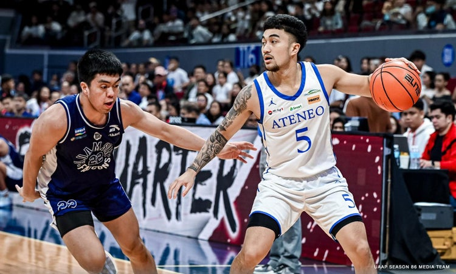
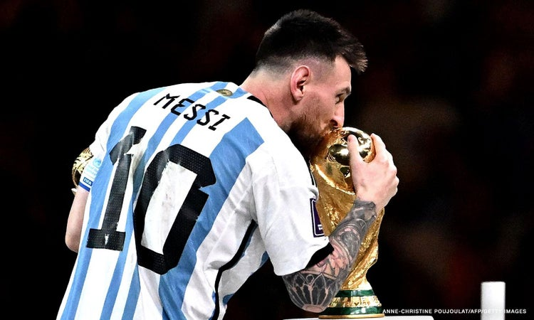
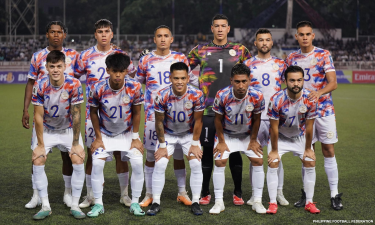

One more fight: Ateneo clinches last Final Four spot with rout of Adamson in KO game
By CJ Marquez, CNN Philippines
Published Nov 22, 2023, 5:17:00 PM

Metro Manila (CNN Philippines, November 22) — Ateneo de Manila University showed the heart of a true champion as the Blue Eagles dismantled the Adamson University Soaring Falcons, 70-48, in a do-or-die game Wednesday for the last Final Four spot in UAAP Season 86 men's basketball at the Mall of Asia Arena in Pasay City.
Jared Brown led the way for the Blue Eagles with 20 points, four rebounds, and four assists on 26 minutes of action.
Despite being in an unfamiliar territory, Ateneo came in the match guns ablazing as it established a 14-point advantage at the half.
It was a disappointing outing for the Soaring Falcons as their shots could not connect to mount a comeback in the second half.
Sean Quitevis added 11 points and three rebounds, while Mason Amos chipped in 10 points for the Blue Eagles.
Matt Erolon paced Adamson with nine points and two rebounds.
Ateneo will face the twice-to-beat top seed University of the Philippines Fighting Maroons in the semifinals set on Nov. 25 at the Smart Araneta Coliseum in Quezon City.
Prices for a set of Messi’s World Cup jerseys could exceed a record $10 million
By Jordan Valinsky, CNN
Published Nov 21, 2023, 6:27:25 AM

New York (CNN) — Soccer superstar Lionel Messi is no stranger to breaking records, and he’s about to possibly add another to his list.
A set of six jerseys that he wore during last year’s World Cup, which his home country of Argentina won, are being put up for auction by Sotheby’s next week. Specifically, the jerseys were worn by the Argentine captain during each stage of the month-long tournament, including the massive final against France.
The auction house expects bids to be in excess of $10 million, with the sale poised to becoming one of the “most valuable collection of sports memorabilia at auction,” it said.
If achieved, the price for the set would surpass a jersey worn by Michael Jordan in Game 1 of the 1998 NBA Final from his famous “Last Dance” season, which sold for $10.1 million at Sotheby’s last year. That shirt currently holds the world record title of being the “most valuable item of sports memorabilia ever sold at auction,” according to the auction house.
The current record for a match-worn item of soccer memorabilia is held by legend Diego Maradona and his “Hand of God” shirt that Sotheby’s sold for $9.3 million last year. Bids were initially expected to range from $5 million to $7 million, perhaps signaling that Messi’s jersey prices could go higher.
“The sale of these six shirts stands as a monumental occasion in auction history, offering fans and collectors a connection to Messi’s crowning achievement,” said Brahm Wachter, head of modern collectibles for Sotheby’s, in a release. “It is an honor for Sotheby’s to present and exhibit these invaluable collectables to the public, which encapsulate the sheer brilliance of a player who has redefined the boundaries of football excellence.”
To date, the most expensive match-worn Messi jersey sold at auction was for $450,000 last year, which he wore during the 2017 El Clásico, a tense battle between his former team of FC Barcelona against Cristiano Ronaldo’s Real Madrid. Messi’s last-minute goal, the 500th of his career, was the match winner.
The online auction for Messi’s jerseys runs from November 30 to December 14 and will be displayed during that time in a free exhibition at Sotheby’s gallery in New York.
Sotheby’s added that the Messi auction comes during a “vigorous market for sports memorabilia and collectibles, fueled by the property and unique experiences it offers.” Similar auctions, including jerseys from NFL great Tom Brady and the late NBA player Kobe Bryant, are luring in younger bidders too, half of them being under 40 years old, with more than half entirely new to its sales, the company said.
Messi, 36, joined MLS team Inter Miami earlier this year, ending a roughly two-decade long stint playing for European teams, notably Barcelona and most recently Paris Saint-Germain. His appearances sent MLS ticket prices skyrocketing and fans had trouble getting their hands on replica jerseys for several months.
Last year in Qatar, Messi helped his country of Argentina win its third FIFA World Cup title (and his first) by beating France via a penalty shootout in one of the most thrilling finals in tournament history. Adidas said that his jerseys and Argentina team kits quickly sold out.
Azkals settle for draw vs Indonesia in World Cup qualifiers
By CJ Marquez, CNN Philippines
Published Nov 21, 2023, 11:41:10 PM

Metro Manila (CNN Philippines, November 21) The Philippine men’s football team settled for a 1-1 draw against Indonesia Tuesday in the 2026 FIFA World Cup and 2027 AFC Asian Cup second round qualifying match at the Rizal Memorial Stadium in Manila.
Patrick Reichelt found the back of the net for the Azkals at the 23rd minute of the contest, giving the Philippines the head start in the first half.
There were a couple of chances for the Azkals to establish a commanding edge, but could not convert again in front of more than 9,000 people in attendance.
Saddil Ramdani scored the equalizer for Indonesia at the 70th minute mark as the visiting squad denied the Philippines of three points in the qualifiers.
The Azkals will return to pitch next year against Iraq in March.